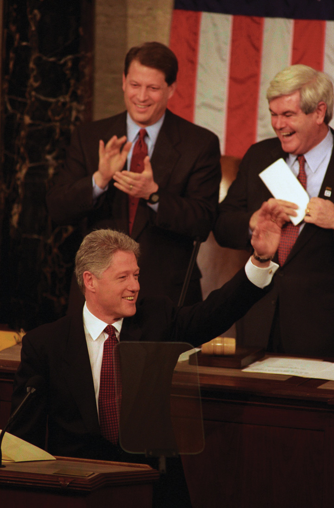
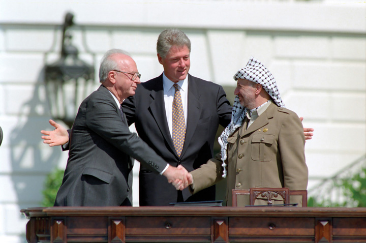

Clinton appointed more women and minorities to meaningful positions in the federal government than any president in the past. Madeleine Albright was Clinton’s secretary of state while Janet RenoThe first female attorney general and a leading figure in the Clinton administration, Reno was frequently in the public eye due to a number of high-profile crimes and controversies, such as the Branch Davidian siege, the Oklahoma City bombing, and the World Trade Center bombing of 1993. served as attorney general. Together, these women led the Clinton administration’s efforts to confront domestic and international terrorism. At home, Clinton supported a number of antipoverty programs and proposed a federal plan to extend health care coverage to all citizens. Clinton also sought to maintain his reputation as a moderate. As a result, the president angered many of the more liberal members of his party who had hoped he would reverse the conservative policies of previous administrations and expand the welfare state. Clinton believed the increasing polarization between the political left and right was an opportunity for presidential leadership. If he could steer a course between liberals and conservatives, Clinton believed, he might win support for his health care reform bill while still being perceived as a moderate that united the country.
The president created a few modest programs that won liberal support. One of these programs was AmeriCorps—a federal work program that employs mostly younger people and seniors in a variety of community service fields. After Clinton’s health plan floundered, however, it appeared to many liberals that Clinton had decided that the easiest way to be viewed as a moderate was to adopt popular Republican initiatives as his own.
Welfare reform provides one of many examples of Clinton’s efforts to steer a middle course between both liberals and conservatives. As a candidate, Clinton had tapped into the suspicion raised by conservative politicians regarding “welfare mothers.” Placing stricter limits on direct payments to welfare recipients, the Clinton administration promised to transform welfare into a program that assisted only those who were striving for independence. Toward this goal, Clinton supported stricter regulations on direct payments. He also approved a significant increase of the Earned Income CreditA tax credit that some low-income wage earners are eligible to receive with the intention of making employment at such a job more financially rewarding and thereby producing a stronger incentive to work rather than seek governmental aid., which offered an annual payment to those who worked at low-paying jobs rather than application for welfare. The amount of the credit was based on income and the number of dependents for which a low-income worker was responsible.
Clinton defended the plan as a means to reward those who worked. He pointed out that most individuals on welfare would make only slightly less than a full-time worker at a minimum-wage job unless some adjustment was made. While Clinton also supported a modest increase to the minimum wage, he believed that tax credits for the working poor were necessary to provide incentives for people to get off of welfare. Critics of the plan were angered that those who qualified for the Earned Income Credit paid no federal tax yet would still receive a tax refund under the new plan. This new policy seemed even more unfair to some individuals in the wake of increased tax rates for some families. At the same time, Clinton’s support for curtailing direct welfare payments also angered some on the left.
Figure 14.1

President Clinton appointed more women to his cabinet and senior staff than any previous president. To the immediate left of President Clinton is Secretary of State Madeleine Albright. In the bottom right corner is Janet Reno, the first woman to hold the position of attorney general.
Clinton’s most ambitious domestic initiative was also the most controversial of his entire eight years in office. As a candidate, Clinton seldom missed an opportunity to talk about the rising costs of health care he believed were crippling the economy and bankrupting families. Clinton’s supporters pointed out that there were nearly 40 million Americans without health insurance—most of whom were children or full-time workers. If elected president, Clinton promised sweeping legislation that would offer universal health care for all Americans under a federally operated managed-care plan that was similar to the offerings of many private insurance companies. Clinton’s supporters argued that because the government would instantly become the largest insurer in the nation, the government would be able to regulate the prices that doctors and hospitals charged. Although a doctor could still charge any amount she wished, the federal government would only pay a certain amount for any particular service. This was similar to the practice of private insurance companies that also established maximum prices they would pay for different procedures and prescriptions. The difference, Clinton believed, was that the federal government would insure so many people that most doctors would have to lower their costs to meet the government rate or else lose the business of numerous patients. Opponents of the plan countered that increased government bureaucracy would either increase the costs of health care or cost taxpayers money.
Clinton’s supporters provided numerous statistics in an effort to show that government intervention would save money and improve care. The campaign against Clinton’s plan was bankrolled by organizations representing insurers, drug companies, hospitals, and physicians. As a result, most Americans questioned much of the information they were hearing as either politically biased or motivated by the medical industry’s own financial interests. However, the plan’s opponents were able to raise the specter of “socialized medicine” by connecting suspicion toward bigger government with the fear that regulating prices would reduce the quality of care. Just as government control over prices decreased the incentive for innovation and quality control in Soviet Russia, Clinton’s opponents argued, establishing maximum reimbursement rates would reduce competition among physicians and hospitals.
The comparisons between America’s health care system and some of the sensationalized tales of malpractice under Socialism were likely unfair. However, Clinton’s plan was complex and few inside or outside of government actually read its provisions. In addition, some Democratic leaders were upset that they had not been consulted in the drafting of the plan. Some Democrats even offered their own competing plans, which led to divisions within Clinton’s own party. Other opponents utilized misogynistic imagery against First Lady Hillary ClintonAttorney and wife of President Bill Clinton, Hillary Clinton was the first presidential spouse to have an independent career at the time of her husband’s election. As First Lady, Clinton led the effort for health care reform and other initiatives. She was elected to the US Senate in 2000 and was a leading contender for the Democratic presidential nomination in 2008. and other women who occupied leading roles in the taskforce that drafted the president’s plan. These opponents derided the plan as “Hillary Care,” creating the image that the president’s wife was really in charge of the White House in ways that played upon negative images of powerful women. As a result of all these factors, Congress rejected Clinton’s plan. Its failure cast a shadow over the rest of the Clinton administration and reduced the ambition of his future proposals.
Clinton had directed much of his energy to his failed health care initiative, believing that his electoral victory was a mandate from voters in support of his plan. Although the recession of the early 1990s was fading, symptoms of economic decline lingered and the president had not passed any major legislation in his first two years in office, despite enjoying a Democratic majority in both houses of Congress. That majority soon evaporated following the 1994 midterm elections as Republicans turned the congressional elections into a national referendum on Clinton’s first two years in office. United under the leadership of Georgia congressman Newt GingrichThe Republican Speaker of the House between 1995 and 1999 and a leading conservative politician, this former historian at the University of West Georgia introduced a platform known as the Contract with America that led to the Republican victory in the congressional elections of 1994., Republicans in congressional districts across the nation ran under the same banner and promised a new “Contract with AmericaA platform that united Republican congressional candidates during the 1994 election with its demands for less government, balanced budgets, and support for socially conservative causes..” The contract itself contained a lofty preamble lauding conservative “family values.” It also included a list of resolutions that called for tax breaks, reductions in the size of the federal government, numerous governmental reform measures, and support for socially conservative initiatives.
Democrats countered that the contract was little more than propaganda—a vague collection of clichés and catchphrases aimed at delivering votes rather than guiding policy. However, many of the provisions within the contract were quite specific. For example, one provision required more transparent accounting procedures—while another required full disclosure of the congressional proceedings. Some of the measures resembled the Populist crusade of the century prior, such as term limits for congressional committee chairs and an end to closed-door sessions. Even sweeping provisions such as a Constitutional amendment requiring balanced budgets every year appealed to most Americans as the national debt approached $5 trillion during the 1994 election.
Figure 14.2
President Clinton delivering the 1997 State of the Union address while Vice President Al Gore (left) and House Speaker Newt Gingrich (right) appear in the background.
The contract placed Democratic candidates on the defensive and defined the terms of the election in many congressional districts. Democrats responded that many provisions of the contract might sound good in the abstract but were either too vague to represent a clear statement of policy or potentially dangerous because they might lead to unforeseen consequences. For example, most Democrats conceded that the contract’s support of the balanced-budget amendment made sense in principle. At the same time, Democrats countered, the amendment might limit the nation’s ability to prevail in times of war or economic crisis. However, the Democrats did not have a similar unified platform and were vulnerable to voter frustration after two years of controlling both Congress and the White House. Republicans were able to solidify the association in the minds of many voters between Democrats, higher taxes, bigger government, and the failure of Clinton’s health care program. United behind the Contract with America, the Republican Party captured both houses of Congress for the first time since the 1950s.
The Republican Congress proposed dozens of bills inspired by fiscally conservative ideas that aimed to reduce corporate and capital gains taxes. They also sought to reduce government spending on social programs that assisted the poor and promoted education. Federally funded programs in the arts and humanities were especially vulnerable, along with welfare programs such as Aid to Families with Dependent Children (AFDC). Others sought to promote causes supported by social conservatives like eliminating affirmative action, legalizing school prayer, and banning the burning of the US flag. Few of these bills regarding socially conservative causes were ever passed, however, and many historians believe that these measures were more designed to win the support of conservative voters than actually become law.
Other’s criticized the Contract with America’s avoidance of the issue of abortion as evidence that the Republicans offered only lip service to social conservatives. Although restricting abortion was a leading conservative issue throughout the 1994 election, the contract avoided any mention of the topic. In fact, some critics pointed out the likelihood that the contract’s “Personal Responsibility Act” would encourage abortion. This law sought to deny additional welfare support to mothers of multiple children. It also prohibited any federal assistance to mothers under the age of eighteen.
Opponents of abortion were the most loyal supporters of the Republican ascendency and hoped the party would finally reverse Roe v. Wade and make abortion illegal once again. However, most within the Republican majority avoided the controversial issue. Laws banning flag-burning passed the House of Representatives but were defeated in the Senate. These were largely symbolic gestures, however, because the Supreme Court had long maintained that such displays were protected under the Bill of Rights. Social conservatives continued to win supporters through populist appeals against a “liberal” Supreme Court that outlawed school prayer while protecting flag-burning. Many political observers were quick to point out that the majority of justices had been appointed by Republican presidents. Others argued that the Republicans spoke the language of the New Right but were more likely to pursue fiscally conservative policies once in office. As a result, many social conservatives felt betrayed when the Republican Congress did not unite behind legislation outlawing abortion.
When it came to fiscal politics and governmental reform, the Republican majority honored their campaign promises and aggressively promoted the provisions of the Contract with America during the 1995 and 1996 legislative sessions. The most significant of these provisions was the proposed Balanced Budget AmendmentA proposed Constitutional amendment that would have prohibited deficit spending by requiring each session of Congress to approve a balanced budget. to the Constitution. This amendment required Congress to submit a balanced budget each year unless three-fifths of both houses of Congress agreed to waive the requirement. The intent of the amendment was to reverse the annual deficits that had accumulated each year. Defenders of the amendment argued that members of the House of Representatives could seldom be counted on to cut popular governmental programs or raise taxes given the realities of the two-year election cycle. Given the measure’s popularity among a public that had grown wary of the growing national deficit, the bill passed the House. However, it failed to garner the necessary two-thirds vote in the Senate and was never forwarded to the states for ratification.
A second measure intended to cut government waste gave the president of the United States the authority to sign a bill into law while rejecting certain attached provisions called “riders.” Riders were provisions that were frequently attached to a proposed bill in order to secure the support of a specific member of Congress who might have otherwise voted against the bill. For example, a law regulating mine safety might be unpopular with a few members of a particular congressional committee overseeing such matters. To secure their support, a rider providing federal funding for a bridge or other project in each of these members’ districts might be added as a rider to win their support. Riders were usually not this overt, but they did result in billions of dollars being spent on “pet” projects that might not have passed Congress on their own merit. The Republican Congress approved a law granting presidential authority to delete riders while approving the law itself through the “line-item veto.” However, a subsequent decision by the US Supreme Court declared that a president’s use of the line-item veto was an unconstitutional subversion of the powers of the legislative branch. As a result, the line-item veto was a short-lived reform.
Although Clinton had championed the role of government in uplifting the poor in 1992, the Republican victory of 1994 demonstrated that reducing welfare spending was still a popular issue among voters. Attempting to chart a course between witch hunts for chimerical “welfare queens” and blaming poverty on the greed of the wealthy, Clinton hoped to promote reform while bolstering his image as a moderate. Clinton promised to “end welfare as we know it” by limiting direct payments and increasing federal funding for job training.
The president’s reform policies borrowed heavily from Republican ideas regarding welfare. For example, Clinton supported a provision that would have placed a time limit on the number of months a person could receive benefits. In addition, noncitizens were ineligible for any payments under Clinton’s plan, regardless of whether they were legal residents. Clinton also backed an anticrime bill that provided cities and states with $30 billion to hire additional officers. This law passed Congress, and also introduced the standard of three convictions leading to lifetime imprisonment for federal crimes. This “three strikes” rule was soon adopted by many state governments. With existing laws that made the possession of even small quantities of illegal drugs a felony, the prison population that had grown so dramatically during the War on Drugs continued to expand. Clinton also backed an increase to the minimum wage (from $4.25 to $5.15 an hour) that won the support of liberals and the working class.
From the perspective of many House Republicans, Clinton was “stealing” some of their most popular ideas. Republicans responded by making their promise to reduce the size of government and balance the federal budget the cornerstone of their platform. The issue resonated with voters, was consistent with Republican ideas about reducing spending, and supported the conservative goal of liquidating the welfare state. Interpreting their dramatic victory in the congressional elections of 1994 as a mandate to slash government programs, Republicans closed ranks behind a budget and tax plan proposed by House leaders.
Clinton submitted a budget that also enacted significant cuts but retained a $200 billion deficit. The Republicans also submitted a budget. Because their plan included tax breaks and increases for defense spending, the Republicans had to make even deeper cuts to numerous social programs. The Republican plan did not spare popular programs such as Medicare and federally subsidized school lunches, two politically sacred programs that had ruined the political careers of those who opposed them in the past. Clinton and the Democrats responded by hammering away at the apparent support of their opponents for billions of dollars in tax cuts for the wealthy, no tax cuts for the poor and the middle class, and reductions for programs benefitting the neediest children and seniors.
The Republican plan to reduce taxes for the wealthy and corporations while appearing to support plans that would take food from children and medicine from seniors astounded political observers. However, the Democratic Party also appeared to be its own worst enemy and a party divided among itself. Even as the Democrats found some unity in their counteroffensive against the Republican budget, the division between the president and more liberal leaders of his party remained. This gulf was exacerbated by the 1994 election, which had resulted in the defeat of Southern and Midwestern Democrats that had supported the president. These were the regions where the new Republican strategy had worked the best, and they were also the regions where Democrats were more likely to subscribe to Clinton’s moderate views. Those Democrats that had survived the 1994 election tended to be from more liberal and urban Congressional districts. These Democrats opposed Clinton’s acceptance of deep cuts to social programs. They were especially angered by Clinton’s revised budget, which included modest cuts for Medicaid. From their perspective, the president was surrendering a key issue that might have won seniors back to the Democratic fold.
Congress and the president spent the majority of 1995 and 1996 wrangling over budgetary matters. When the Senate and the president refused to approve the House budget, Gingrich and the Republicans refused to compromise, which led to a temporary shutdown of nonessential federal services. National parks and federal offices closed while payments for millions of government employees and recipients of Social Security were delayed. Although the shutdown was caused by a refusal of both sides to compromise, most Americans blamed outspoken Republicans such as Gingrich for the shutdown. The Republicans quickly reversed course and restored Medicare spending, yet many Americans were convinced that Gingrich and his supporters precipitated the standoff as a political calculation rather than an ideological commitment to fiscal responsibility.
Clinton’s strategy in the 1996 election was based on appealing to as many voters as possible by portraying himself as a moderate within a polarized system. The strategy required distancing himself from liberals without alienating his liberal base. The key for Clinton was to appeal to moderate conservatives. However, if Clinton strayed too far to the political right, he risked the possibility that a popular liberal candidate might challenge him for the Democratic nomination or run as a third-party candidate. Clinton’s ability to chart a middle course on issues such as affirmative action helped convince popular Democrats like Jesse Jackson to support Clinton’s bid for reelection rather than entering the race. Had Jackson decided to contend Clinton’s reelection, he would have eroded the president’s support among many liberal and minority voters. Once Jackson was on board rather than an opponent, Clinton was able to occasionally veer to the right of his own party because there were few other potential Democratic challengers.
Clinton faced the Republican Senator Bob DoleA World War II veteran and senator from Kansas who was defeated in his 1996 bid for the presidency by Democrat and incumbent Bill Clinton. in the general election. At age seventy-three, Dole was both an experienced and well-respected leader but also an aging career politician who had failed to inspire voters during the Republican primaries. Dole’s brand of conservatism was more moderate than the drift of the Republican Party under Gingrich. The Kansas senator expressed his personal support of the conservative “family values” of the New Right. At the same time, he did not believe that government should accommodate any particular religious views. Dole also believed that the attack led by Gingrich and others upon liberals was both divisive and a distraction from the role of responsible government.
Dole attempted to distance himself from the controversial issue of abortion, but reluctantly embraced an antiabortion provision that was necessary to shore up his support among evangelicals. However, Dole’s public opposition to abortion reduced the candidate’s appeal among a number of undecided voters, especially female voters, who might have otherwise voted for Dole. Clinton also undercut the potential of Dole’s support among undecided voters by supporting a number of socially conservative initiatives. The most controversial of these was the 1996 Defense of Marriage ActA federal law passed in 1996 that defined marriage as a union between a man and a woman. The law does not prohibit states from performing or recognizing same-sex marriages, but it does not compel a state to recognize the legality of same-sex marriages performed in other states. that legally defined marriage as a union between a man and a woman. Clinton’s opposition to same-sex marriage contrasted sharply with his avowed support for gay rights in the past. However, it cost him few votes given the unlikelihood that gay-marriage supporters would vote for a Republican.
Dole seemed noncommittal himself when it came to the budgetary matters. The senator called for a 15 percent tax cut for all Americans while promising to increase defense spending and balance the budget. Voters asked how Dole could deliver these seemingly irreconcilable objectives, a question the Republican candidate seemed to dodge as he gave a series of uninspiring speeches across the nation. Clinton matched Dole’s travel schedule, tipping the balance between running for president and being the president as he crisscrossed the country and turned every address to the nation into a stump speech.
Clinton’s campaign also may have crossed the boundary between fundraising and selling access to the president. Clinton fundraisers allowed dozens of foreign nationals, some with shadowy connections and apparent agendas, to meet with the president for a price. Later investigations would show that Clinton’s campaign was even financed by allowing major donors to stay in the White House’s famed Lincoln bedroom. The aggressive fundraising allowed Clinton to approach the massive funding of the traditionally probusiness Republican Party. While Clinton’s possible fundraising violations drew the most attention, both campaigns pushed the limits of campaign-finance regulations. For example, recent legislation limited the amount of money an individual or corporation could donate to a particular candidate. However, these same laws permitted unlimited donations of “soft money,” which could be used to support a particular issue or party. Both campaigns skirted these restrictions, financing advertisements that implicitly endorsed a candidate. They also made use of political action committees and other proxy organizations to evade the law’s funding limits.
The gender gap in presidential elections had historically been almost imperceptible. In 1996, however, Dole polled slightly more votes among men while 16 percent more women voted for Clinton. With this unprecedented support of female voters, Clinton won a decisive victory with 379 votes in the Electoral College to Dole’s 159. Even if Dole managed to win all of independent candidate Ross Perot’s 8 million votes, Clinton would have still won the popular vote by a slim margin.
The 1996 presidential election was about personalities and featured Clinton’s ability to adopt popular conservative ideas and programs as his own. Clinton best demonstrated this ability regarding the issue of welfare reform. In 1996, Clinton supported a plan that eliminated Aid to Families with Dependent Children (AFDC), a federal welfare program that had provided cash payouts to poor families since its creation as part of the Social Security Act of 1935. The new law replaced AFDC with Temporary Assistance for Needy Families (TANF)A welfare agency that replaced Aid to Families with Dependent Children, TANF provides grants to individual states to administer their own welfare programs.. This program contained stricter regulations and a two-year limit that applied to able-bodied adults.
Perhaps ironically, this time limit was specifically mentioned in the 1994 Contract with America. Clinton made only one significant modification to the Republican idea: if an able-bodied adult who had been removed from the welfare rolls drifted back into poverty, the two-year clock would restart and the individual could receive welfare once again. Clinton’s plan also capped lifetime benefits at five years, after which an able-bodied person would be completely ineligible for government aid. Clinton’s TANF plan even borrowed from the New Federalism of Nixon by having individual states administer the funding for the program. States were granted wide latitude in determining how their TANF programs are administered. Some states placed even shorter limits on the amount of time a person might draw benefits and also required proof that an individual was actively searching for a job.
Liberals felt that Clinton’s TANF plan betrayed their party’s commitment to providing a safety net for the poor. These individuals pointed out that the vast majority of AFDC recipients were dependent children, as the name of the now-defunct plan suggested. They also reminded voters that 11 percent of the population and 20 percent of children were below the federally established poverty level. Defenders of the plan argued that states would be more effective in administering funds and better able to make sure children were still provided for, even after their parents had used up their eligibility for welfare. Critics of the state-level plan also pointed out that many poor Americans migrated frequently in search of work. They feared that families might “fall through the cracks” of the system as they moved from one state to another and had to reapply and wait for benefits.
Clinton’s popularity increased during his second term—largely due to an economic boom and slight tax reductions for the middle class. Real estate and corporate profits grew rapidly and were reflected in rising stock values that benefitted more and more Americans given the popularity of mutual funds and self-service online brokers. The boom was especially evident in the technology-dominated NASDAQ stock exchange, which quadrupled during Clinton’s second term. Clinton’s popularity defied a series of investigations into his own finances, which began during his first year in office. In 1993, an independent government investigator responded to allegations of malfeasance regarding the Clinton family’s real-estate investments in the Whitewater River Valley of Arkansas. Investigator Ken Starr soon expanded the search to include Clinton’s fundraising activities, the use of government travel funds, and the disappearance of files related to these investigations. Although each investigation raised questions regarding the character and conduct of the president, the investigations turned up little concrete evidence of wrongdoing.
The investigation may have tarnished the image of the Clinton administration, but most Americans quickly grew tired of the very technical legal questions about what appeared to be at most a minor and complicated violation. Investigations regarding Clinton’s personal life, however, quickly became fodder for late-night talk shows and entered conversations around the country. A former Arkansas employee named Paula Jones accused the former governor of both sexual harassment and a consensual extramarital affair. Once again, there was little evidence that Clinton had committed a crime, and Jones failed to collect the hundreds of thousands of dollars she sought.
The Jones affair was closely followed by a more serious revelation of a sexual relationship with a White House intern. For months, the nation largely ignored world events, health care reform, and other budgetary concerns while the sordid details of the Monica Lewinsky scandal came to light. Given the relentless and apparently personal nature of independent counsel Ken Starr’s previous investigations, many Americans discredited the evidence Starr produced regarding the Lewinsky scandal. However, they also refused to believe the president’s denials and were angered when Clinton later revealed that he had lied under oath in an effort to cover up the affair. It was for this crime rather than the affair itself that Clinton was impeached by the House of Representatives. However, the Senate refused to remove the president from office, and most Americans agreed that his indiscretion was neither a high crime nor a misdemeanor. Perhaps unfairly, by the time it was all over, most Americans had a lower opinion of Kenneth Starr, Lewinsky, and even the president’s wife than the man who had lied and committed adultery.
Clinton’s ability to escape scandal angered conservatives who had hoped the Lewinsky affair would become the Democrat’s Watergate. In the preface of his Contract with America, Newt Gingrich and other conservatives had promised to restore the dignity of Congress and end the “cycle of scandal and disgrace” many Americans now associated with high political office. Gingrich was among the president’s leading inquisitors and perhaps the loudest voice of those who called for Clinton’s resignation or removal. Ironically, a handful of other Republicans who led the charge against Clinton were later convicted of improper sexual relations with underage congressional pages. Gingrich himself was found to be having an extramarital affair with a much younger member of his staff who later became his third wife. Gingrich soon resigned from office after facing ethics charges and criticism for his personal life.
Clinton’s continued invincibility to scandal led some to compare the president to the “Teflon” coating that prevented material from sticking to pots and pans. However, Clinton’s ability to withstand multiple scandals likely had more to do with the economy than any other factor. The official budgetary surpluses announced by the Clinton administration in its final year were the result of an economic boom that produced increased tax receipts. As a result, Clinton presided over an era of prosperity that allowed the federal government to produce balanced budgets and even a small surplus in Clinton’s final years. Despite all of the debate in the early 1990s about the need for sacrifice, the economic boom of the middle and late 1990s created millions of new jobs that allowed the government to balance the budget while lowering taxes and avoiding controversial reductions to popular government programs.
Attorney General Janet Reno played a much more public role than most attorney generals, beginning in the spring of 1993 with her controversial decision to lay siege to the compound of cult leader David Koresh in Waco, Texas. The compound caught fire during the government raid and ATF agents entered to find that over seventy of Koresh’s followers had either been killed or committed suicide. Three years later, two domestic terrorists cited the raid as justification for a deadly attack on a federal building in America’s heartland.
The Oklahoma City BombingThe deadliest terrorist attack in the United States until September 11, 2001, the Oklahoma City bombing killed 168 people when a truck bomb exploded next to a federal building on April 19, 1995. of April 19, 1995, claimed 168 lives, making it the most deadly act of terrorism on American soil up to that time. In an era when the nation was politically divided, this cowardly and senseless attack reminded Americans of their commonalities. Millions of complete strangers donated money for the victims’ families. Others waited in long lines hoping to donate blood that might aid the hundreds who were wounded in the attack. The president’s moving speech also restored his sagging public image and pushed political leaders toward reconciliation. The government responded in unusually bipartisan fashion following the attacks, providing assistance to victims and significantly increasing funding for antiterrorism programs, which helped to thwart a number of similar plots in the coming decade.
Figure 14.3
The 1995 Oklahoma City bombing was the deadliest terrorist attack on American soil until the attacks on September 11, 2001.
Americans also donated generously during international crises such as the famines of East Africa during the mid-1980s. By 1990, the East African nation of Somalia was affected by a crisis that could not be solved by bread alone. Somalia had been colonized by Italy a century prior. Somalia secured independence in 1960, but suffered from the same instability that plagued most postcolonial nations. An expanding civil war engulfed the capital city of Mogadishu in 1990 and led to the dissolution of the government. Rival factions declared themselves in power and attempted to assert their will by force while the people of Somalia suffered from the combined effects of famine and civil war. Hundreds of thousands of civilians had died, and the situation was rapidly declining when the United Nations approved the use of troops to restore order and assure that international aid reached civilians.
In 1992, Clinton increased the small contingent of humanitarian forces already in place through Operation Restore Hope. Sending troops to help distribute food and other relief supplies in a time of famine appealed to the sensibilities of most Americans. However, it also threatened the interests of local gangs and profiteers who had risen to power by exploiting the famine and political disorder. Tensions quickly exploded as US troops attempted to locate and capture local warlords who were thwarting humanitarian efforts by stealing most of the food and selling it to purchase more weapons. In the summer of 1993, the most dangerous and powerful Somali warlord killed two dozen UN peacekeepers from Pakistan. The bodies of these humanitarian troops were mutilated by the supporters of this warlord to send a message to any who dared to oppose them.
US Special Forces responded with a message of their own, launching an ambitious raid against this particular warlord in October 1993. The conflict quickly escalated into the Battle of MogadishuA street battle between US forces and militiamen loyal to Somali warlords in October 1993 that led to President Clinton’s decision to withdraw US troops from Somalia. The battle was popularized by the book and movie Black Hawk Down. when rebel forces shot down two Black Hawk helicopters and disabled several other vehicles with rocket-propelled grenades. US troops under assault and cut off from their base rallied until a rescue operation secured their safety. However, eighteen soldiers had been killed. Absent a clear threat to the security of the United States and shocked by graphic images of rebel soldiers dragging the bodies of US troops through the streets, Clinton and the US public favored withdrawal of US forces.
Figure 14.4

Marines search a Mogadishu market for caches of hidden weapons prior to the 1993 Battle of Mogadishu that was popularized by the movie Black Hawk Down.
In the wake of the Battle of Mogadishu, a hasty and precarious ceasefire agreement was reached in the spring of 1994. Clinton’s decision to completely withdraw from Somalia following this tenuous “peace” drew heavy criticism. Many recognized that local warlords would simply resume their assault against the people once US forces left the region. These individuals believed that the United States was abandoning its peacekeeping mission and believed Clinton had defaulted on his promise to restore peace and stability in Somalia. However, few American or UN officials were willing to devote the material and human resources required to reach that objective. Armed with hindsight, some critics believe that the hasty withdrawal from Somalia represented a lost opportunity to develop goodwill in the Muslim world. At the very least, these individuals believe that the early exit of US forces emboldened those such as Al Qaeda who had provided support to some of the area warlords.
Ethnic conflict erupted in the African nation of Rwanda in April 1994. The conflict in Rwanda represented the combination of a century of imperialism and decades of ethnic conflict between members of the Tutsi minority and Hutu majority. Seeking stability rather than development, during Rwanda’s colonial period, the ruling Germans had placed Tutsi leaders in control. This decision inflamed existing tensions between Tutsi leaders and the majority of Rwandans who were members of the Hutu tribe. The Belgians later controlled Rwanda and continued the German tactic of utilizing existing divisions to administer the colony. Like the Germans, Belgian officials played both ethnic groups against one another.
Figure 14.5

Following the Rwandan Genocide in 1994, many Hutus fled the country and sought safety in makeshift camps such as this refugee camp in nearby Zaire.
When the Belgians were finally forced to grant Rwanda its independence in 1962, the sudden departure of the former colonial rulers created a power vacuum that resulted in a series of civil wars that bordered on genocide. In 1994, that border was crossed when a group of Hutu warlords sought to eliminate the Tutsis forever. The United States had no strategic interests in the region and declined intervention. From a distance, the 1994 conflict appeared to be simply another violent episode of ethnic strife in postcolonial East Africa. When ten UN peacekeepers were among the early victims of the violence that broke out in the summer of 1994, the United States responded by calling for the complete removal of UN forces.
Dramatic pleas for help were ignored. For example, a clergy member who had sought refuge within a hospital wrote a desperate letter calling for help. At the time, the hospital was surrounded by Hutus armed with machetes and ordered to kill each person inside. His appeal fell upon deaf ears, and the entire hospital was massacred. The clergyman’s plea began with the following words: “we wish to inform you that tomorrow we will be killed with our families.” This chilling exhortation later became the title of a powerful and graphic narrative of the killings written from eyewitness descriptions of the 1994 Rwandan GenocideThe attempt of Hutu extremists to exterminate the entire Tutsi minority in Rwanda in 1994. The Tutsi minority had ruled Rwanda in recent years, and some of the Tutsi leaders had used violence against the Hutu majority, which led to both fear and ethnic hatred of all Tutsi among many Hutus.. Within one hundred days, approximately 800,000 Rwandans had been murdered, mostly civilians killed by other civilians with machetes and other agricultural tools.
Area African nations intervened, and forces controlled by the Tutsi minority rallied and seized control of the Rwandan government by late summer. This development prompted the mass exodus of Hutus. Even though most Hutu refugees had not participated in the slaughter of the Tutsis, they feared retribution. These Hutu evacuees had no place to go other than cholera-infested refugee camps. Without an understanding of Africa’s colonial past, most Americans interpreted the problems of the central African nation in the context of their own miseducation. Desirous for a simple solution for a “backward” nation in the center of a continent they had never learned about in school; most adult Americans continued to marginalize both Africa and Africans by convincing themselves that there was simply nothing that could be done to prevent suffering in every corner of the world.
Clinton later confided that his unwillingness to intervene in Rwanda was his chief regret during his entire eight years as president. Clinton scored high marks in the fall of 1993 when he helped to facilitate a meeting between Israeli Prime Minister Yitzhak Rabin and the leader of the Palestinian Liberation Organization (PLO)An organization formed in 1964 with the goal of creating a homeland for the Palestinian people that has sought the elimination of the state of Israel for most of its existence. The PLO had reinvented itself in recent years and is now recognized by the United Nations, although many Americans and people of Jewish descent still consider the PLO to be a terrorist organization. Yasser Arafat. As had been the case with President Carter’s historic rapprochement between the leaders of Israel and Egypt, the simple acknowledgement by Israel and the PLO of each other’s legitimacy may have been the most significant outcome of the meeting. The two leaders signed an agreement regarding Palestinian sovereignty within the West Bank and Gaza Strip—two areas that Israel had controlled since the failed 1967 invasion of Israel by Egypt, Syria, and Jordan.
The actual negotiations occurred in Sweden, and the agreement became known as the Oslo AccordsAn agreement between Israel and the Palestinian Liberation Organization (PLO) intended to serve as a framework for future negotiations regarding Israeli and Palestinian sovereignty in disputed territories and other matters dealing with relations between Israelis and Palestinians.. The formal acceptance of the Oslo Accords occurred during a White House ceremony attended by Rabin and Arafat in September of 1993. The agreement required Israeli military forces to withdraw from the West Bank and Gaza Strip. It also created an organization to oversee the gradual transfer of authority for these areas to the Palestinian people. Most of the details regarding the transfer were intentionally left vague and were supposed to be decided during future negotiations. At the time, many around the world optimistically believed that the Oslo Accords provided the framework by which a peaceful resolution of the Israeli-Palestinian conflict might be achieved.
Figure 14.6
Israeli Prime Minister Yitzhak Rabin shakes hands with Yasser Arafat, leader of the Palestinian Liberation Organization in 1993. Many hoped this meeting and the Oslo Accords would lead to a peaceful settlement of the historic conflict between Palestinians and Israelis.
However, details matter and neither side appeared willing to trust the other enough to implement even the first steps they had agreed upon. Israel retained its military forces in the Gaza Strip and West Bank, while Palestinian officials proved unable to reduce the violence against Israelis in these and other areas. The Israelis also continued to construct settlements for Jewish settlers in these areas. A vicious cycle of blame emerged where Israelis cited continued Palestinian attacks as justification of their military presence while the Palestinians cited the continued Israeli presence for their actions. Future meetings brokered by President Clinton did little to end the mutual distrust that prevented the first stages of the Oslo Accords from being implemented. The peace process broke down as neither side was willing to disarm or even speak out against supporters who were committing acts of violence in their name. The violence prevented the formation of the interim governmental agencies that were supposed to provide Palestinians with limited sovereignty as a step toward peaceful coexistence and the eventual creation of a Palestinian homeland.
Following the American experience in Somalia, Clinton became cautious in his foreign policy. The president usually denied requests for troops. Instead, he attempted to thwart genocide, famine, and the development of nuclear and chemical weapons through policies of aid and sanctions. For example, Clinton negotiated an agreement with North Korea to halt its attempts to develop nuclear weapons in exchange for food and medicine that were to be distributed among the needy civilian population. Many correctly assumed that much of the aid would be seized by the corrupt government, which would continue its attempts to develop weapons of mass destruction. An uprising in Haiti resulted in the deployment of a small contingent of US soldiers, mostly to reinstall the democratically elected Jean-Bertrand Aristide as president. Once US troops left the impoverished island, Aristide ruled the nation as a dictator, and violence and corruption returned to the island.
The situation was particularly disturbing in the Balkans where nationalist Serbs in Bosnia, with the support of Serbian President Slobodan Milosevic, had been killing Muslim civilians for many years. As a candidate, Clinton had been critical of Bush’s refusal to intervene in the Balkans. As president, however, Clinton followed a similar policy. Clinton maintained Bush’s arms embargo that was intended to curb violence. This embargo disproportionately hindered the Muslim minority who had fewer weapons to begin with. Clinton recognized the shortcomings of his approach, but he had been deeply affected by the loss of American lives in Somalia. A political pragmatist, he devoted the bulk of his energies to domestic matters that proved politically popular. Even in retrospect, each of Clinton’s options regarding North Korea, Somalia, Haiti, and the Balkans might have led to thousands of US casualties and lengthy military occupations, with no guarantee of success.
Despite his attempt to avoid future deployments, the president was forced to take his attention away from the budget debates and other domestic matters in the summer of 1995 when Bosnian Serbs under Milosevic began slaughtering Muslims and other minorities. In July, Bosnian Serbs evicted the women and female children from the town of Srebrenica, which had a Muslim majority, and slaughtered the remaining 7,000 men and boys. By August, Serbian forces under Milosevic began shelling the city of Sarajevo.
Figure 14.7

A US Army engineer directs traffic across a pontoon bridge linking Bosnia-Herzegovina to Croatia, where many supplies and support troops were staged during the 1995–1996 peacekeeping mission in Bosnia. This image demonstrates the importance of engineers and other support troops in modern warfare.
The United Nations sent a small force of 6,000 peacekeepers while the United States debated what to do. Muslim fighters and the Croatians tentatively worked together in a successful counteroffensive that forced Milosevic to agree to peace talks that were held in Dayton, Ohio. The Dayton Accords created the new Federation of Bosnia and Herzegovina with a dual government backed by the belated presence of 60,000 NATO troops. From the perspective of the West, the United States had sent its own sons and daughters to protect civilians in a nation where it had little strategic interest. From the perspective of Muslims in Europe and around the world, the West’s delayed response occurred only after the bombing of Sarajevo rather than because of years of genocidal acts against the Muslim minority of Southern Europe.
In 1992, many of the nations of Western and Central Europe created the European Union (EU)An economic and political confederation of independent European nations that choose to utilize a common currency and follow other agreed-upon measures designed to reduce trade barriers between those members and promote trade and diplomacy., a confederacy that incrementally grew in its authority to regulate commercial and other international affairs. The United States, Canada, and Mexico responded by forming the North American Free Trade Agreement (NAFTA)A trade agreement between Canada, the United States, and Mexico that eliminates trade barriers, such as tariffs, between each nation. in 1993. NAFTA had been a leading priority of Republicans and was supported by the incoming Republican President George H. W. Bush. The agreement sought the complete elimination of trade barriers between the three nations. NAFTA angered many Democrats but was still supported by Clinton, who hoped to appear as a moderate and win the support of business leaders.
Environmentalists feared that NAFTA would reduce the effectiveness of protective legislation by encouraging corporations to relocate to Mexico. Labor unions and many individual Americans feared that it would also result in a loss of American jobs for the same reason. NAFTA was unpopular among most voters, partially because some politicians disingenuously equated its limited goals with the European Union. Unlike NAFTA, the EU sought to coordinate most governmental functions and even foresaw joint armies and a common currency. A decade later, the goal of a common currency was achieved when EU member nations adopted the euro as their medium of exchange. However, NAFTA has not expanded to include such collectivist policies but continues to arouse controversy among diverse groups of voters.
Although few nations beyond Europe expressed interest in creating a common currency, major summits were held seeking to reduce global trade restrictions. Many of these summits took place under the auspices of the General Agreement on Trade and Tariffs (GATT), which was signed by two dozen nations shortly after World War II. After four decades of GATT summits, GATT itself was replaced by the World Trade Organization (WTO)An organization that seeks to reduce trade barriers between nations, it replaced the Global Agreement on Trades and Tariffs in 1995. in 1995. The WTO is an international agency headquartered in Geneva that seeks to encourage free trade and reduce government restrictions regarding international commerce. The WTO is charged with promoting trade and economic development in ways that also protect the economies of member nations. However, many in the United States and around the world have criticized the WTO as a tool of wealthy corporations in developed nations that seek to practice new forms of economic imperialism.
These protests against globalization reached a crescendo in November of 1999 when an estimated 50,000 protesters disrupted the WTO summit in Seattle. A large number of these protesters were college students who joined a diverse movement of citizens who believed that the WTO was fueled by a corporate agenda. Many of the protesters were environmentalists who feared that the WTO would make decisions that would reduce standards and enforcement of environmental protection. Many also believed that developing industries in developing nations would be crushed by international competition. Labor unions were also present in Seattle, fearing globalization would permit corporations in developed nations with higher standards of living to lower wages and benefits or simply relocate their operations abroad. Others feared that unregulated markets would lead to the elimination of smaller companies and promote the growth of multinational corporations they believed operated like cartels.
Figure 14.8

An estimated 50,000 protesters demonstrated against the 1999 WTO summit held in Seattle. Many of these protesters are dressed as sea turtles due to their belief that globalization doomed many endangered species. The novelty of blue collar union members marching alongside environmental activists in opposition to the WTO led many to refer to the protesters as “teamsters and turtles.”
Many Americans viewed the protesters as lacking a positive agenda of their own, opposing globalization but lacking their own alternative. Others believed the protesters were motivated by a misguided and naïve belief in some utopian alternative to Capitalist development. The protesters responded that they had specific solutions and lacked only access to power, rallying behind a brief document circulated by students at the University of Washington and other Seattle-based colleges called the Declaration for Global Democracy. Together, the protesters rallied behind the document’s final exhortation of “No Globalization without Representation.” The five points of this declaration provided a bit more substance but still appeared vague to the document’s critics. They protested the WTO’s undemocratic structure and nontransparent methods. The document also challenged world leaders to ensure that human advancement rather than material acquisition would become the standard by which they measured the efficacy of global trade policies.
The students and their supporters also rallied behind something they called sustainable development, a standard that included human rights, worker safety and compensation, environmental protection, and reversal of global inequity. However, the popular image of the 1999 protests does not reflect the progressive tone of these goals. Similar to the labor protests of the late nineteenth century, the message of the protesters soon became moot when a handful of individuals became violent. In response, the police responded with what many considered to be excessive force. Erroneous reports that the protesters had attacked police created or solidified existing negative images of the protesters. The same was true of sensational reports of bystanders being assaulted. Although some news outlets printed retractions, the image of the anti-WTO meeting being dominated by radicals persisted and colored the view of many Americans toward those who protested against globalization.
This concern for maintaining free trade without harming the economies of member nations led to the derailment of several free-trade initiatives within developing countries in the early 2000s. This is especially true in areas such as agriculture, where millions of families depend on agriculture for their livelihood. American grain is often produced much more efficiently due to mechanization. It is also heavily subsidized by the federal government. As a result, many nations fear that the complete elimination of trade restrictions will result in their farmers being forced to compete with inexpensive American grain. While many point out that this development would provide relief for many impoverished urban dwellers, others fear that the competition would destroy the agricultural base of developing nations. If this happened, they argue, the result would be long-term dependency on foreign grain. The WTO launched a major series of conferences in Doha, Qatar, in 2001. The organization continues to meet in related conferences around the globe in hopes of resolving issues regarding agricultural subsidies and other global trade issues.
The WTO and other organizations dedicated to reducing trade barriers have also been derailed by environmental concerns. Environmentalists have shown that certain refrigerants and aerosol sprays deplete the layers of ozone gas in the earth’s atmosphere. These ozone layers absorb most of the potentially damaging ultraviolet light that radiates from the sun. Scientists demonstrated that chemical compounds in some refrigerants used in air-conditioning systems were especially dangerous as they neutralized the ability of ozone gas to block ultraviolet rays. As a result, laws were passed in the United States and other nations mandating the use of different refrigerants and regulating the chemicals used in producing aerosol sprays and other manufactured goods. The global nature of environmental concerns such as ozone depletion led to a series of UN initiatives such as the Kyoto Protocol. The result of a global summit on reducing greenhouse gases led by Vice President Al Gore, the Kyoto Protocol produced a binding treaty requiring developed nations to reduce their emission of greenhouse gases. As of 2011, the Unites States is the only developed nation that has not signed the treaty.